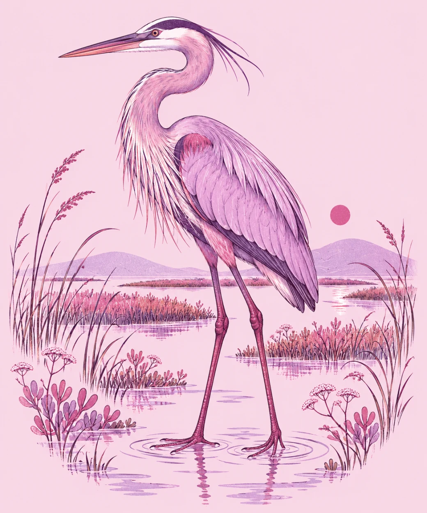

San Francisco Bay Area
Sole Clue.
Match the feet to the habitat.
From tidal mudflats to oak woodlands, every bird leaves a clue. Look closely at its feet and guess where they’d come in handy.
Start playing
6 rounds 4 choices each

How to play
-
Study the feet
Look for details like webbing, claws, and the way the toes point.
-
Pick a habitat
Choose the Bay Area habitat where those feet would be most useful.
-
Meet the bird
See which bird it is and how its feet help it swim, wade, climb, or forage.